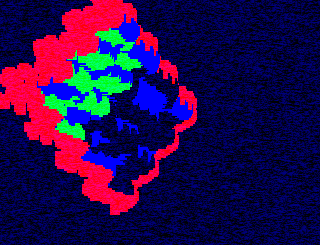
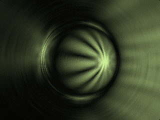
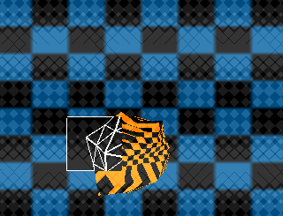

|
 |
|
|
|||||
_____
/ /\ _____
/ / / __/__ /\
/ / / / /\/ / ____
/ /_/_/ /__ / / /\
/ /\_/ / /
/________ ___/ / __/ /
\_______/ /\ \/ \_\/
_____ /____/ \__\ \
_\ __/\ \ \ / /____/\
/___\_\/ \____\/ \____\/
/ - _/\
/_/\_\_/______ ___________
/ __/ _ / \/ _ / _ /\
/____/____/_/_/_/_/---/____/ /
\_________________\/--\____\/
4k source compothe compo is over!(the 2003 compo is over, return to the main page for details on current compos) |
results
congratulations Jylam!
Jylam has won the first ever 4k source compo.
3d

by Jylam Lollipop hogwagen

by tonic different wavelengths in the visible spectrum
randomname

by termos and styx download4ksrc-pack1.zip (40kb) contains all the entries. If you are on windows and don't have glut.dll and sdl.dll in your path, you should get 4ksrc-pack1-glut-sdl.zip (229kb) instead -- it contains all the entries, and the .dlls required to run them on win32. thanksThanks to all the participants for entering the compo! Despite having only 4 entries the compo turned out te be quite exciting! Also thanks to those who tried to enter but didn't make the deadline. I will try to find someone to organize a sequel to this 4k source compo in a few months. Or perhaps some of you want to impose some other arbitrary limits instead of the 4k source limit? Whatever you want, please visit us in #demoscene (freenode irc) to discuss this and other topics! -- warp |
|||||||
 |
 |
|
|
 by spectre/flare
by spectre/flare